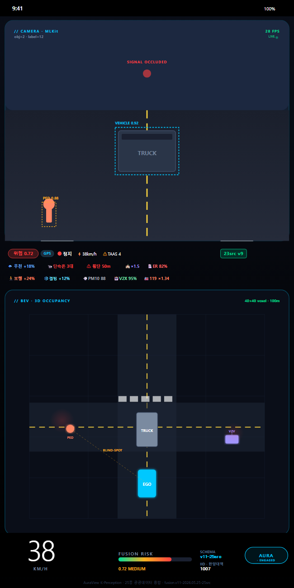

08
/ 12
운전자 클라이언트 · 모바일 UI
운전자가 보는 화면 —
카메라부터 사각지대까지
한 화면에

Flutter 네이티브 앱 · 기능 현황 (정직 표기)
📷
카메라 + ML Kit 객체 검출
단말 작동
온디바이스 검출 박스 + FPS · Z Fold 3는 still-frame 폴백으로 보정
⚠️
위험 점수 + 25 융합 데이터 칩
단말 작동
TAAS·우천·결빙·스쿨존·119·V2X…
/fusion 실시간
표시 + 신호 가림 HUD
🔔
발화 · V2V 송신 · 기여 업로드
단말 작동
임계 초과 시
햅틱 + 음성
· V2V broadcast · /fleet/contribute
🛰️
BEV 3D Occupancy (사각지대)
서버 라이브
/occupancy/demo
에서 계산 — 좌측 시각화는 단말 지향 UI (로드맵)
🎯
차량·보행자 정밀 분류
로드맵
현재 generic 검출 → fleet 학습으로 클래스 정밀화 예정
핵심 흐름은
단말에서 실제 작동
· 사각지대 계산은
서버 라이브
— 과장 없이, 되는 것만 표기.